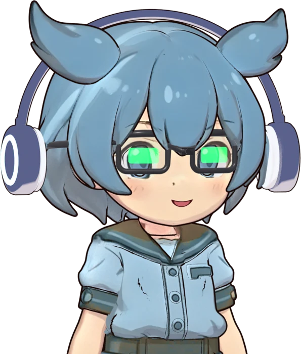
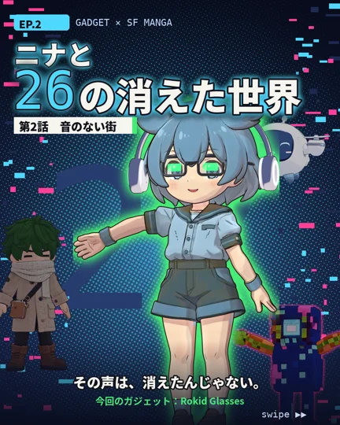

REVIEWED
Rokid Glasses

緑一色のMicro-LED表示視界の中に文字が浮かぶ。字幕・翻訳・ナビをレンズ越しに読める。
- 重さ約49g。ふつうのメガネとほぼ同じ感覚
- 表示緑一色のMicro-LED（両目）
- マイク4つ＋AIノイズ低減。雑音の中でも声を拾う
- AI文字起こし・翻訳（最大89言語）・会議の要約
- カメラ正面中央に1200万画素
NINA
聞こえない声が、目の前に文字で出てくるの。これ、すごくない？
OPERATOR
実際にこのグラスで動く「会話アシスト」アプリを自作中。表示が緑だけなのも、慣れると読みやすいです。

登場回 / EP.2第2話「音のない街」を読む↗